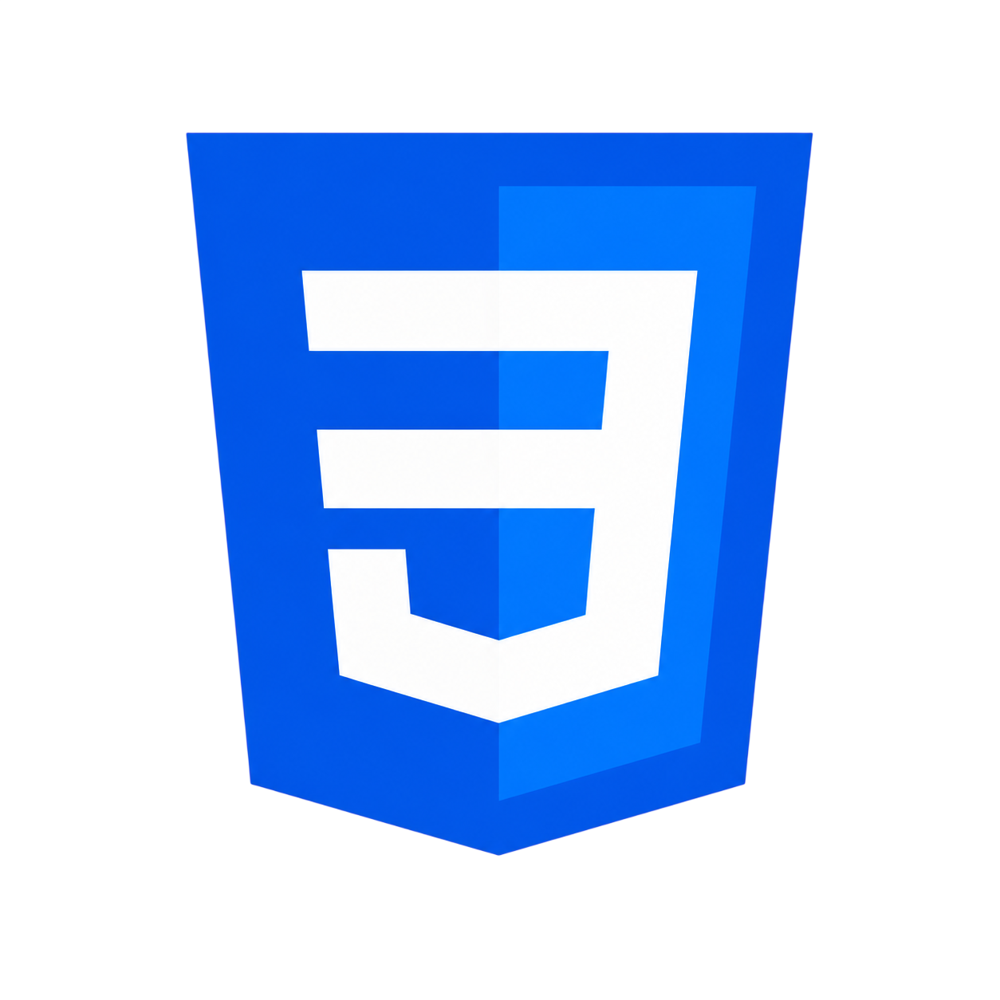
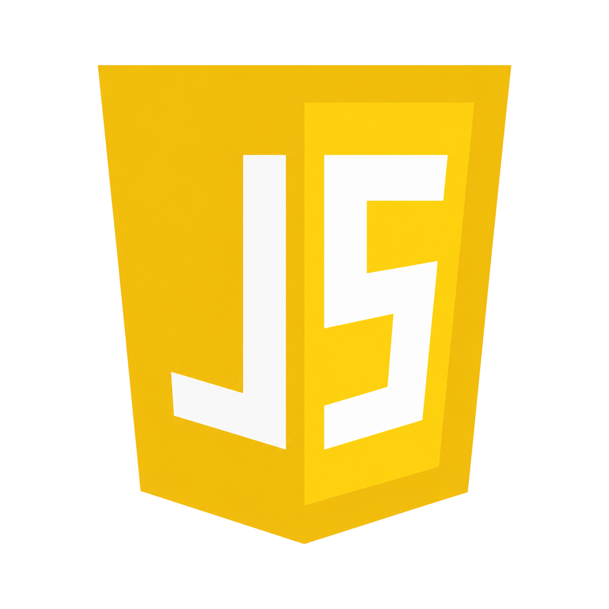
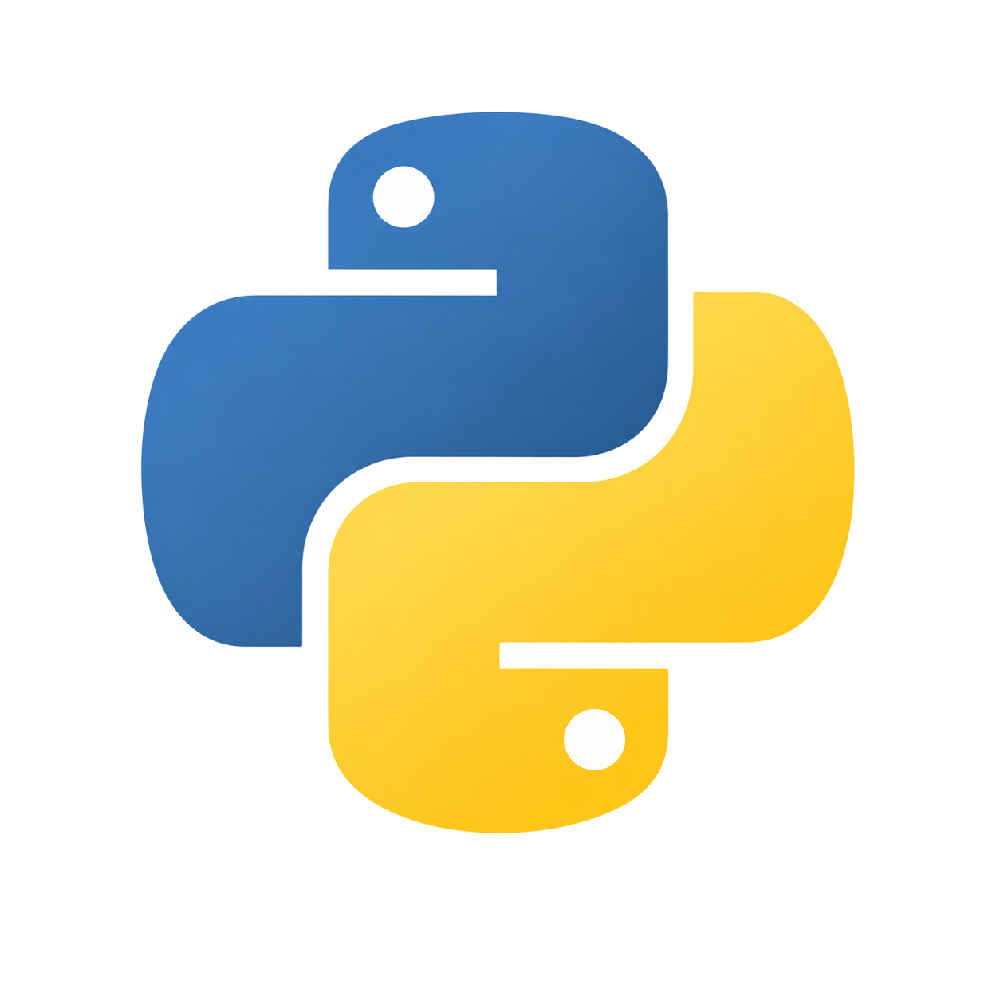
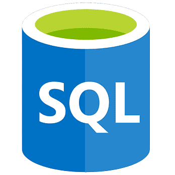
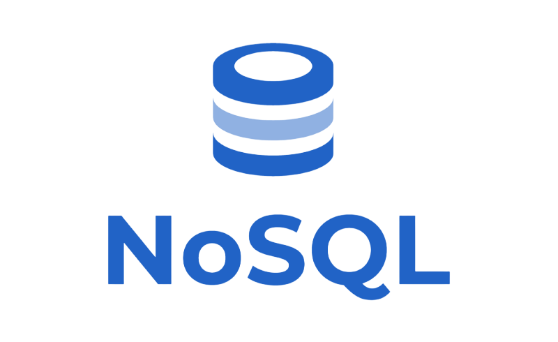

./whoami
Soy entusiasta y estudiante del Ciclo Formativo de Grado Superior en Administración de Sistemas Informáticos en Red (ASIR), con formación complementaria en Ciberseguridad, Big Data e Inteligencia Artificial.
Mi foco principal es la arquitectura de hardware, la administración de redes y la gestión de datos. Mi objetivo es aplicar mi pasión por la seguridad informática en entornos de sistemas reales, asegurando que la infraestructura tecnológica sea robusta, eficiente y esté totalmente blindada.
Estoy listo para sumergirme en nuevos proyectos donde pueda aportar soluciones sólidas, crecer profesionalmente y absorber nuevas metodologías junto a un equipo experimentado.
<Hard_Skills>
- 🛡️ SIEM / Monitorización SOC
- 🌐 Redes Cisco (Routing & Switching)
- 🔍 Análisis Forense Digital
- 🏭 Ciberseguridad OT
- 📡 TCP/IP, ICMP, DNS, DHCP, VLAN, routing
- 🛠️ Cisco Packet Tracer & VirtualBox
{Soft_Skills}
- 🗣️ Comunicación asertiva y clara
- 🧠 Capacidad de aprendizaje rápido
- 🤝 Trabajo en equipo
- 🚀 Proactividad
- 🔄 Adaptabilidad
- 📅 Planificación estratégica
- 🌍 Inglés — B1 (Intermedio)
Herramientas de Scripting y Apoyo
Utilizo lenguajes de programación y bases de datos como herramientas de automatización, análisis de vulnerabilidades y gestión en sistemas.




